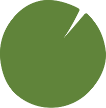
Projects
-
State Affairs Pro
Aug 2025 – present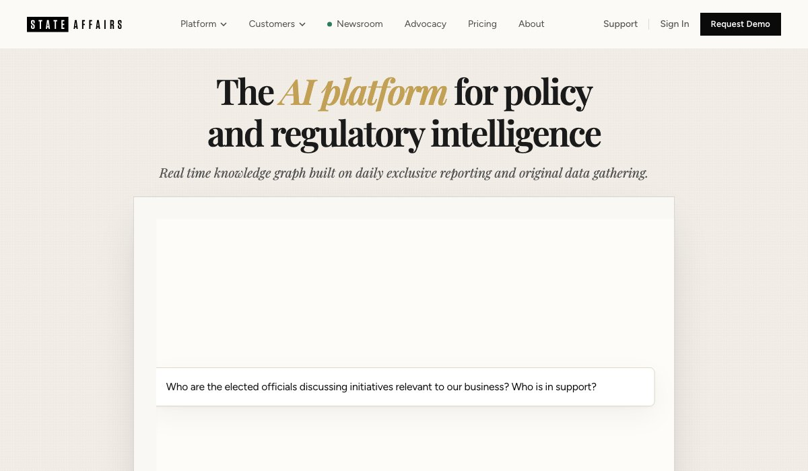
AI platform for policy intelligence · 2M+ bills ranked
I designed the recommendation system that ranks 2M+ bills for State Affairs Pro, using bill text, citation networks, legislative activity and LLM-extracted signals from 125K+ hours of hearing transcripts. I also added document processing to its AI agent, saving customers about 10 hours of manual work a week, and built LangGraph monitoring that turns agent traces into eval datasets.
Built with: Python, TypeScript, LangGraph, Langfuse, embeddings, Next.js
visit the site for State Affairs -
Augmented Reality Interior Design
Apr 2025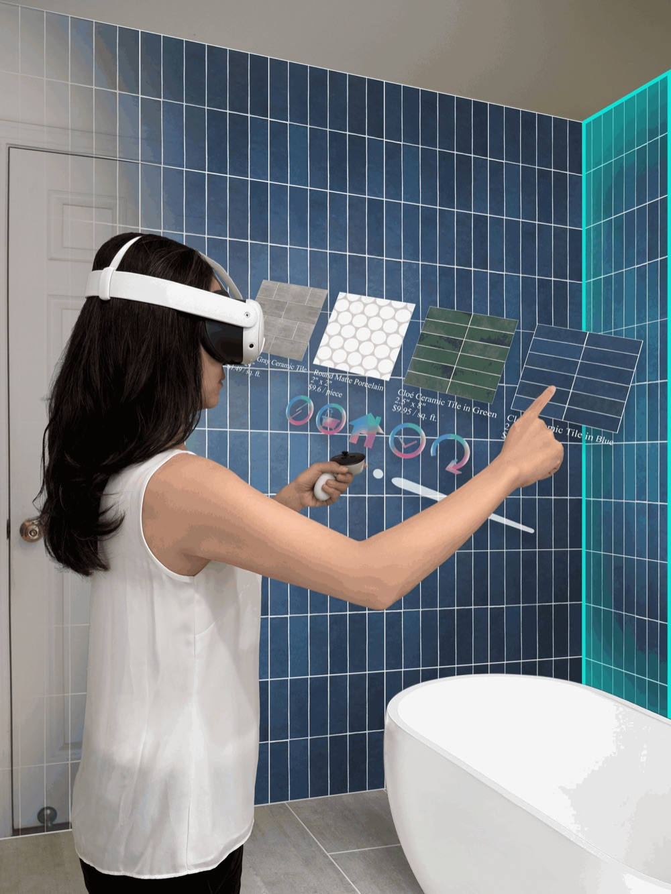
iF Design Award winner, chosen from 11,000 projects
AR entity selection for interior design, built in Unity and ARKit. Raycasting and spatial plane detection let you pick out walls precisely: over 95% interaction accuracy in user testing, and 40% faster selection with custom hit-testing.
Built with: Unity, C#, ARKit
see the award -
Slider.fun
Jun 2024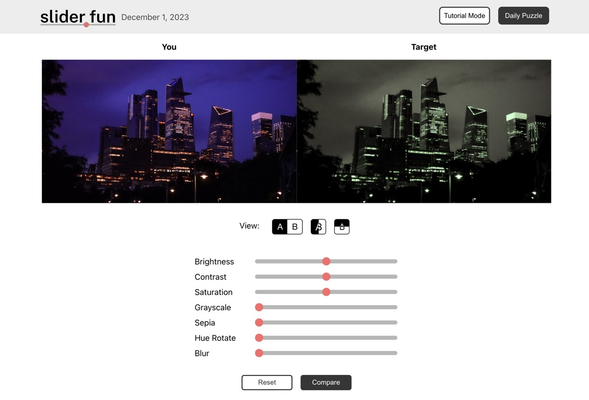
Photo-editing puzzle game · 1,000+ plays in launch week
Slider is a photo-editing puzzle game. You use the sliders to edit an unedited photo until it matches the edited target, and your editing skills improve as you solve more puzzles. I led a team of 5 engineers; features include filters, layers and RMS-deviation scoring.
Built with: MongoDB, Express, React, Node.js, Firebase
learn more about Slider.fun -
Autonomous Robot Delivery System
Jan 2024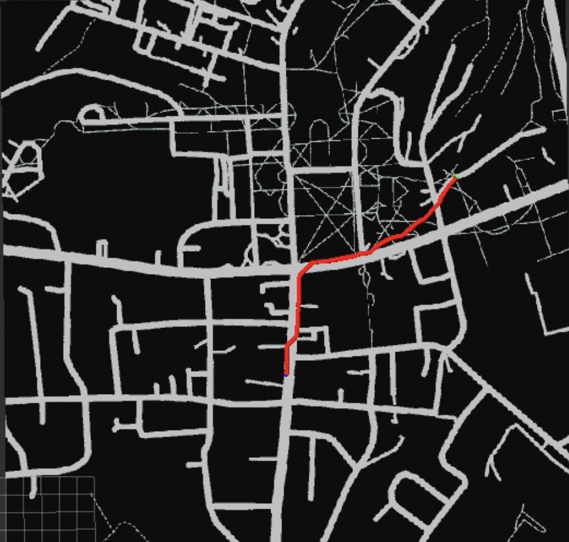
Self-driving delivery robot for Hanover, NH
I led a team of 3 to build a delivery robot that maps and navigates the town, including GPS-denied areas, using SLAM. A* handles point-to-point routing and the Chinese Postman algorithm covers every street, cutting total route length by 22% compared with naive traversal. The code is private because it contains API keys, so email me if you'd like to learn more.
Built with: Python, ROS, RViz, OpenStreetMap, SLAM
email me about it -
SideQuest
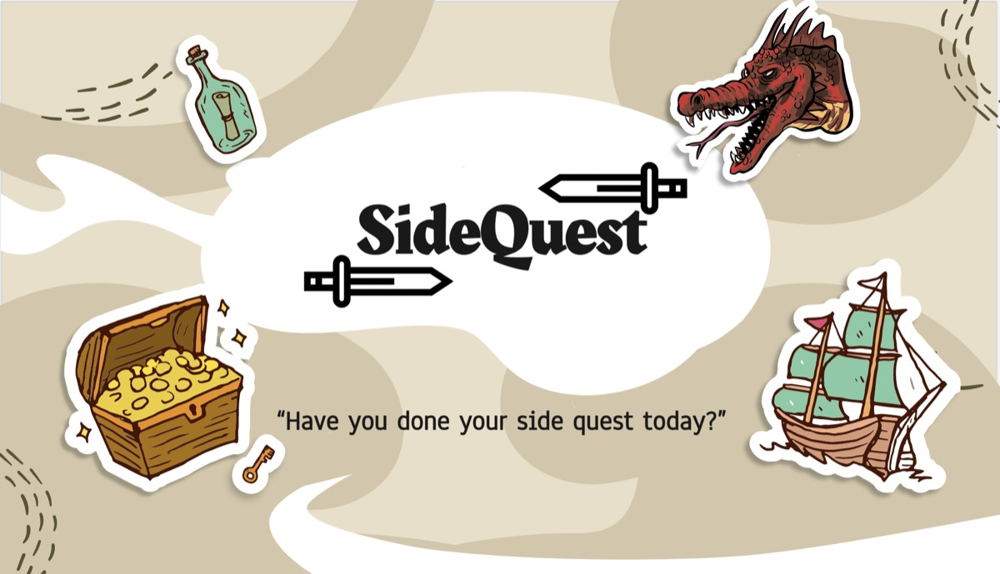
Life engagement app
SideQuest sends you a real-life task every day to encourage self-improvement and social interaction. I built it as the final project for a full-stack development class.
Built with: Express, React Native, Node.js, MongoDB
learn more about SideQuest -
Half Cup
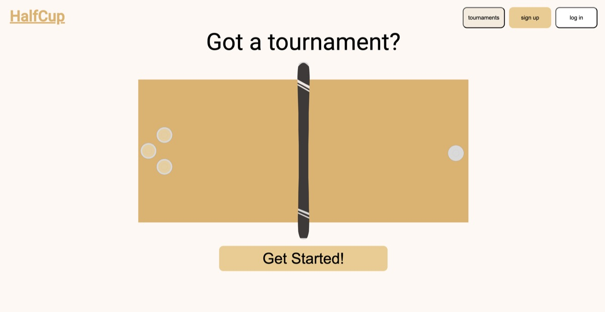
Tournament bracket app
An online tournament bracket manager for creating and sharing brackets. I built it as a personal project for my friends and me.
Built with: Express, React, Node.js, Firebase, Redux
learn more about Half Cup -
Online Chat App
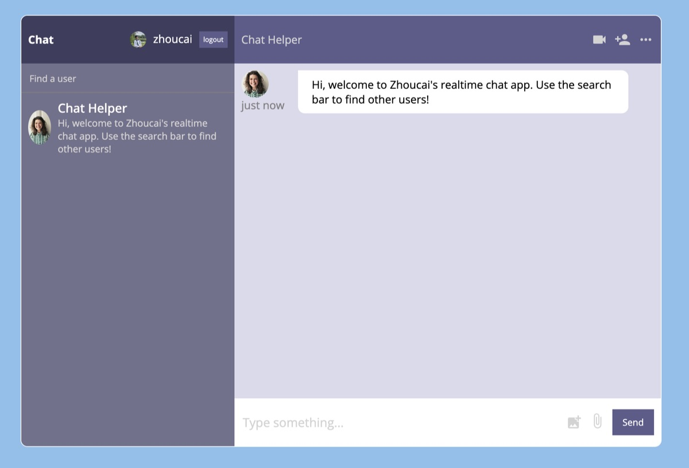
Real-time messaging
A personal project I built to learn more about React and how online messaging apps work.
Built with: Express, React, Node.js, Firebase
learn more about Online Chat App -
Tiny Search Engine
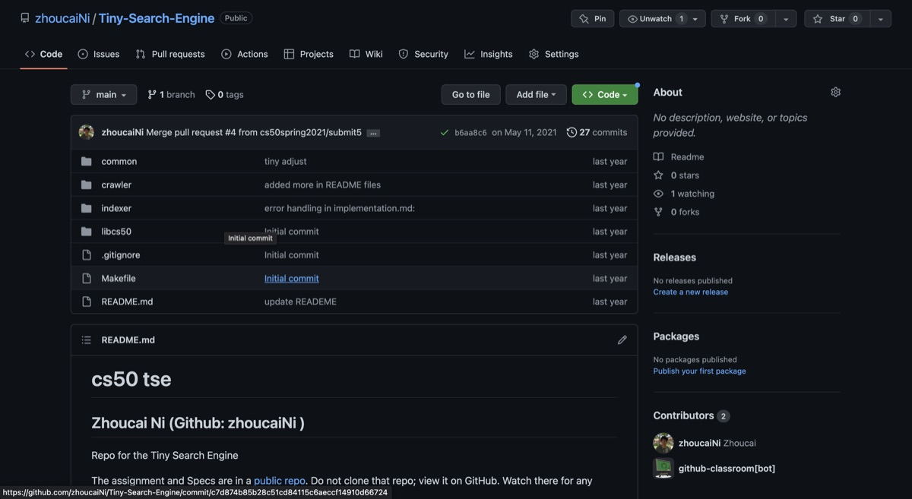
Early Google search, implemented in C
Final project for a software design class, written in C. It follows the crawler, indexer and querier design of early Google search and PageRank.
Built with: C, Make, Bash
learn more about Tiny Search Engine -
Animal Shelter Machine Learning
2022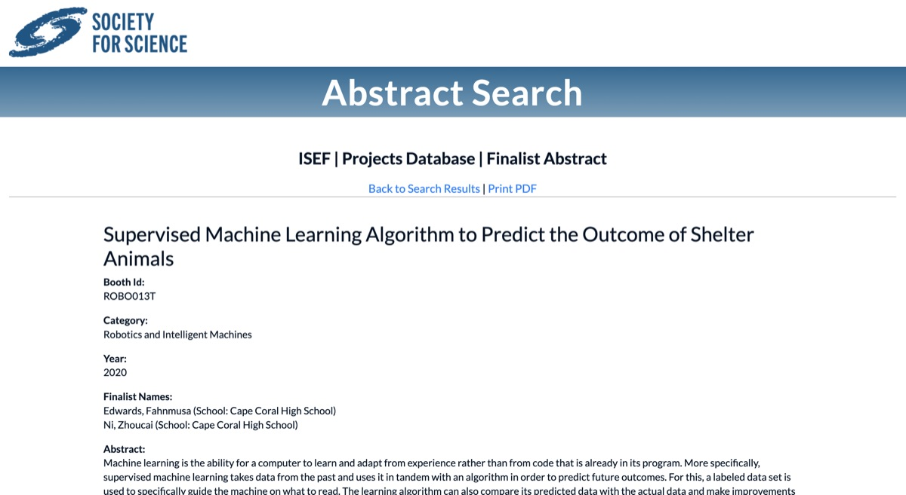
ISEF 2022 finalist
Supervised machine learning software that helps animal shelters allocate their resources. A finalist project at the International Science and Engineering Fair in 2022.
Built with: Python, PyTorch, NLTK, Pandas
learn more about Animal Shelter Machine Learning -
Poet-GPT
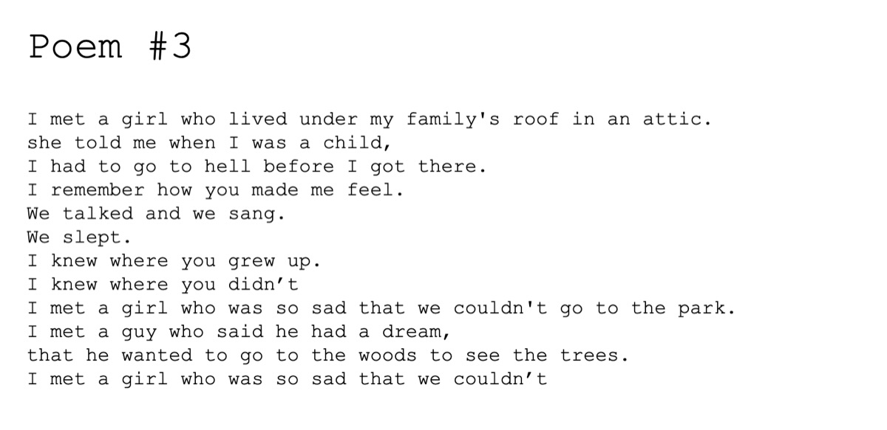
Generative language model for poems
Fine-tunes GPT-2 in PyTorch on a dataset of poems from the Poetry Foundation to generate new poetry from a prompt.
Built with: Python, PyTorch, Transformers, NLTK, Pandas
learn more about Poet-GPT -
Photography Landing Page
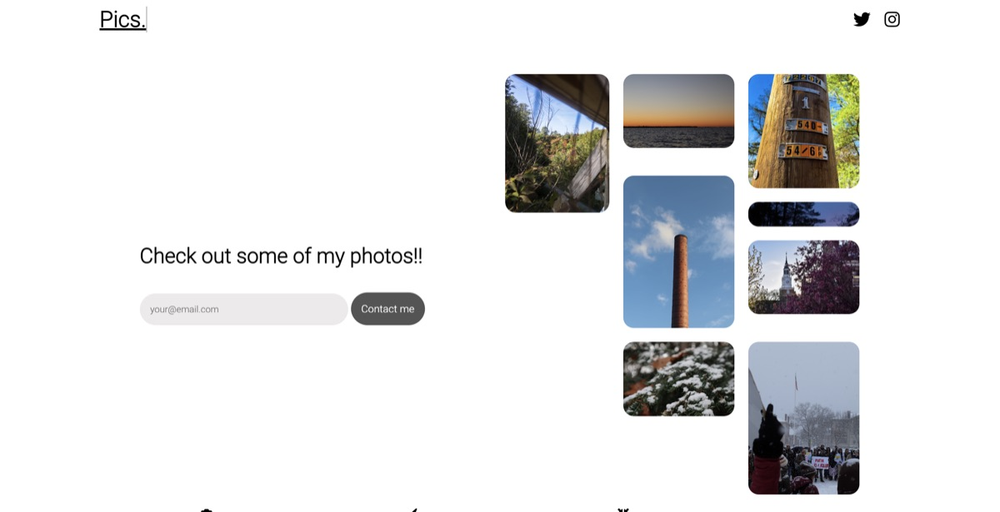
Pure HTML and CSS
A photography landing page clone, coded in plain HTML and CSS.
Built with: HTML, CSS
learn more about Photography Landing Page -
Simon Says Clone
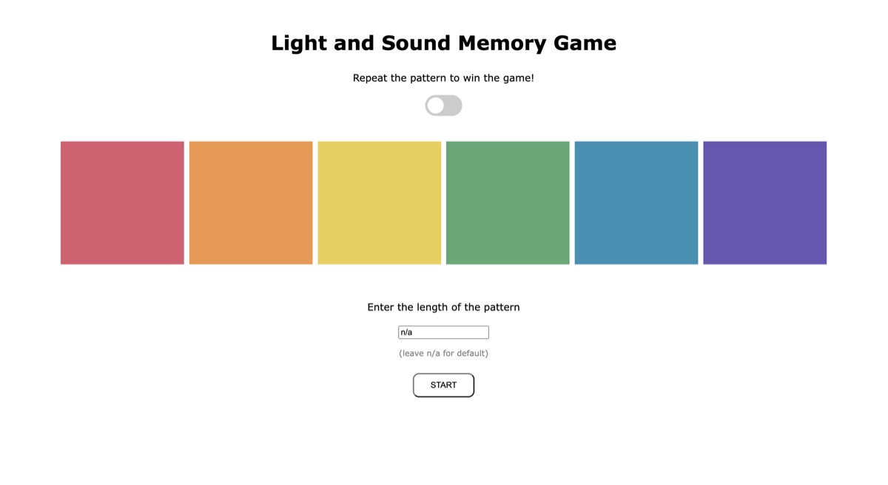
Classic memory game
An HTML and JavaScript clone of the classic Simon Says game, with extras like night mode and custom pattern length.
Built with: HTML, CSS, JavaScript
learn more about Simon Says Clone -
How I Met Your Mother Character Quiz
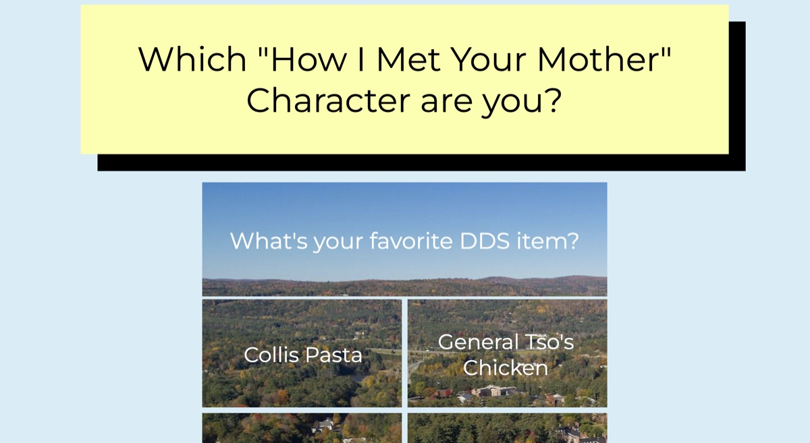
Which character are you?
A JavaScript web quiz that tells you which How I Met Your Mother character you are. The questions center on personal interests and Dartmouth College culture.
Built with: HTML, CSS, JavaScript
learn more about How I Met Your Mother Character Quiz